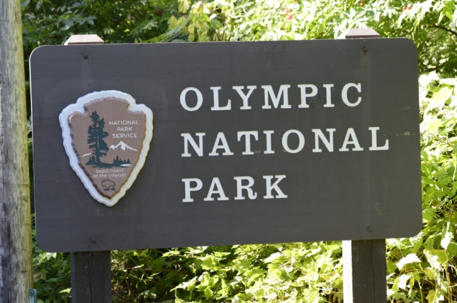
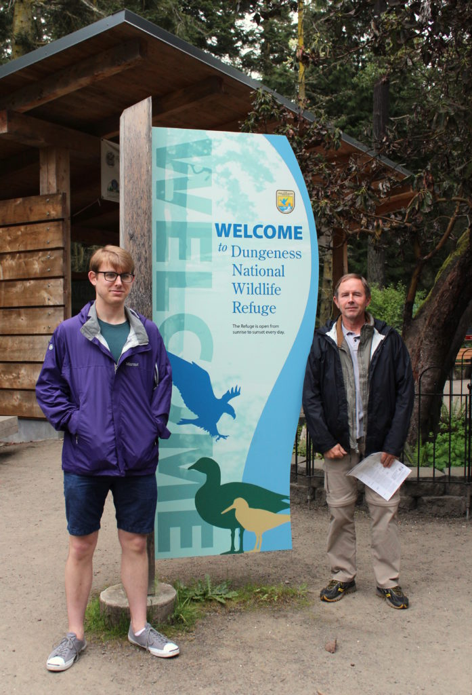
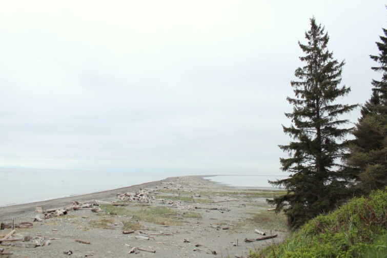

.png)
.PNG)
.PNG)
.PNG)
.PNG)
.PNG)
.JPG)
.JPG)
.PNG)
.PNG)


source
Goodbye to Bainbridge Island, and now on to Washington’s Olympic National Park, the favorite of my husband and our son. This travel day was amazing to me because of the variety of geography we enjoyed in a period of less than 24 hours. We began our day here at Dungeness National Wildlife Refuge.
Dungeness is a sand spit that juts 5 1/2 miles out into the water, the longest spit in the United States.
Due to a tight driving schedule for the day, we did not walk its entirety that morning, but if we had, we would have arrived at New Dungeness Light. You can tour it if you hike the spit to get there, or even better, you can stay there with your family or a small group of friends for a week to actually be the lighthouse keepers. (The week before Christmas is the only availability left for this year.) I’ve always thought that would be something fun and interesting to do.
We left the Dungeness area after hiking about half its distance and drove for a little over an hour.
This was our next view…
 Welcome to Hurricane Ridge!
Welcome to Hurricane Ridge!
(And yes, there was an avalanche hazard for the day.)
Remember how I was wanting snow last winter and never saw any?
Well Hurricane Ridge gave me my snow. 🙂
Gorgeous snow all around!
After exploring that area, we hopped back in the car, drove a little over an hour again to arrive here.
Hello beautiful Lake Crescent. 🙂
This was my favorite stop in Olympic National Park.
Unfortunately we were one week away from their opening for the summer season. 🙁
But when we return, I hope we will stay in one of these cozy cabins.
It was just so peaceful there. (But I imagine when it is open, it is quite busy and probably not quite as peaceful.)
I took this photo looking through one of their sunroom windows.
Wicker Heaven, just waiting to be put out!
When it is open, this is what the sunroom looks like.
We walked all around their beach area on that sunny day.
And then it was time for another hour or so drive.
This was the view out the window this time.
Soon we passed these cute ranger stations.
And stopped here for a hike.
These are the Soleduck Falls. This photograph does not do them justice because it is hard to capture their magnitude. To put it in perspective, that “pole” going across the water at the bottom is actually a very large tree trunk, and if you look near the top of the photo you can see a man standing on one of the rocks there.
The area also has a lodge with hot springs and cabins.
But we did not stay there. Instead we once again hopped back in the car after our hike, drove another period of a little more than an hour and arrived at the Pacific Ocean right at sunset.
This is where we stayed for the night.
And I’ll tell you all about it in the next post. 🙂
Olympic National Park is huge, and its variety of terrain is simply wonderful. It was amazing to me that we could experience the longest sand spit in the United Stated, snow on top of mountains, a gorgeous peaceful lake, a raging river, cascading waterfalls, and a beach at the Pacific Ocean all in a matter of one day. Thank you so much for following along with us on this adventure. I’ll have two beautiful lodges for you to explore coming up.
Until next time….


.PNG)
I thoroughly enjoyed seeing all these breathtaking pictures! Thanks for taking the time to share them with us.
———————————————————————
Thank you Irene! I’m so glad you are enjoying the travel posts.
Kelly
Hi Kelly! I JUST got back from the PNW yesterday – was in Bellevue for a conference! It’s very weird to be a visitor in your own home – took some great pictures of the few remaining places in town I recognized. If you haven’t had dinner at The Beach House in Kirkland, make sure to add it to your stops. Back to heat and humidity today – what a change. Looks as if you and your “boys” had a superb visit.
———————————————————————
Aw you could have gone by to visit our son, Susie! That would be so strange to be at a conference in your own home town. We have not been to The Beach House, but I will pass your recommendation along to our son who I know will be more than happy to check it out. 🙂 Hope we can too on our next visit.
Yes, the humidity is in full force here. Who needs a sauna when Mother Nature provides one the instant you walk outside? Thank goodness for air conditioning!
Kelly
hi Kelly! I just found your blog and I really love it! You’ve visited places I hope to see one day and I’m enjoying reading through all the posts and looking at the pics. 🙂 Washington is just beautiful.
———————————————————————
Thank you Alice! I am so glad you found your way over to the blog. Washington is a beautiful state, and I do hope you get to visit it one day. There is so much to see there (and so many good places to eat as well! 🙂 )
Kelly
How beautiful! We spent some time in Oregon traveling the coast. I would love to go to Washington. What awesome scenery! Can’t wait to see the lodges.
———————————————————————
I wish we could have spent more time in Oregon. That will be for our next trip out there. I hope you get to see Washington on your next trip Peggy. 🙂
Thanks for reading and commenting. I appreciate it!
Kelly
Thank you so much for taking us on your trip. I so wish we were doing another trip Stateside in the near future, but it is not on the cards for the moment. However, your photos and words help a great deal, allowing me to feel I am getting to explore, albeit vicariously!
——————————————————————-
Well thank you for coming along Frances! I hope you get to make another trip here in the near future. There is so much to see and explore!
Kelly
Hi a Kelly, must be half asleep this morning as I ended up putting my comment on an earlier post instead of here, not sure how that happened!! Anyway …
What a beautiful and interesting drive Kelly, So many variations of scenery all in one day. It made me think of a day we spent, a few years ago,that started with us wearing t shirts in a sunny San Francisco, driving through the Napa Valley …still warm and sunny! Then along a very icy, snow lined road up to Lake Tahoe, where there was so much snow! My children were all quite young and promptly lay down in the snow to make “snow angels” 🙂 Such a memorable day …as I’m sure yours was. Keep having fun and enjoying your travels!
Rosemary
———————————————————————-
No worries Rosemary. I took it off the other one. 🙂 Your day sounds just like ours with the variety of landscapes. It certainly made for a fun day, didn’t it? One of those we will remember forever!
Kelly
Hi Kelly! I felt many emotions throughout your tour but your photo of the sunset on the ocean literally took my breath away! Thank you so much for sharing your life with us. Your friend in Cincy, Julia
——————————————————————–
Thank you so much Julia. That was one beautiful sunset. We had driven all day, and it was such a thrill to finally be at the Pacific Ocean at the end of it.
Kelly
Hi Kelly! What a wonderful day you must have had. It’s funny to see the snow banks and your son in shorts! Love the little cottages, so cute. Having never been to the west coast it’s nice to share in your adventure. Thank you!
———————————————————————
Yes, the shorts were not quite the appropriate things for that deep snow! But then we did start the day with warm weather…who would have dreamed we would have seen over 10 feet of snow after we left?! Crazy! Thank you for reading and commenting Tricia. 🙂
Kelly
I am so happy you enjoyed the park! We have enjoyed many times there with family in all our years here in WA.
———————————————————————
You are lucky to be able to take advantage of it so frequently Barbara. Beautiful area!
Kelly
What a beautiful place to visit and explore!! That snow!! Wow, I couldn’t believe how deep! I loved the little cabins too and the wicker. What an inviting spot that must be when it is open. 🙂 The sunset was stunning too. Thanks for letting us tag along another trip!! 😀
——————————————————————-
That snow was unbelievable!! I have never been where it was that deep. Glad you liked all the cabins and the wicker too Gina. And thank you for following along with our trip. 🙂 More to come.
Kelly
Kelly,
What a beautiful park. I will have to add that to the list of places in the Pacific Northwest that I’d like to visit. The place you stayed looks wonderful, can’t wait to take the tour.
Your son looks very young. Is he attending college in Washington?
xo,
Karen
——————————————————————–
Lake Crescent Lodge was definitely my favorite of all the national park places. Plan your trip when they are open. How funny you should say that about our son. No, I’m afraid he is not college age. In fact, he has been out of college for about 6 years and he works for a tech company in Bellevue. (But he should be happy to read that he looks young. 🙂 )
Kelly
I’m enjoying your pieces on our beautiful state. I live in Western Washington and love these same places. Despite my 70+ years, I feel that joy of discovery like the first time. You and your blog are delightful!
———————————————————————
Thank you for such a sweet comment Vel! I am so happy that you are enjoying all the posts on your part of the state. You live in a wonderful wonderful area!!
Kelly
Yes! The Olympic National Park is gorgeous! We stayed in one of those cabins at Crescent Lake. It was pretty peaceful. The lodge is like going into another era. It feels as though the ladies should be in long skirts and wide brimmed hats and the men suited as to the era. Beautiful photos Kelly.
———————————————————————
Lucky you Milli!! Crescent Lake looked like the perfect place to relax. It definitely does look like you are stepping back in time to a simpler place.
I hope we make it back there one day.
Kelly
Kelly,
Your day trip was full of adventure and lots of different landscapes. It all looks like so much fun and interesting. It would have been so hard to not walk out that sand spit to the light house. Thanks again for sharing! Take care. I can’t wait to see where you take us next.
——————————————————————-
I too would have loved to have seen that light house up close, and if it had only been the 5.5 miles we would have done it. But it was 5.5 miles to get there, and the same 5.5 back. We unfortunately did not have that kind of time for it that day. Hopefully we can fit it in on another trip to the area.
There were so many wonderful things to see in the Olympic National Park – too many to fit them all in!
Kelly
I am enjoying my vicarious trip to the PNW. Love it when you share your travels.
———————————————————————
I’m so glad you are! Thank you for following along Sandy!
Kelly